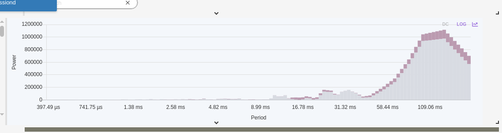

TMLL
Now a full-fledged MCP application
Trace Machine Learning Library, from notebooks to agents
Traces as MCP Resources
- Open experiments & traces are exposed as MCP resources
- Agents can browse and reason over live trace data
- Read-only tools marked non-destructive via ToolAnnotations
- Progressive discovery keeps the tool surface manageable
MCP in Action
An agent driving TMLL over MCP, browsing traces, running analyses and plotting results live
Analysis at the Agent's Fingertips
plot_xy_with_anomalies returns inline images & HTMLcreate-field-plots generates & posts XML analyses via TSP- Both a CLI and an MCP interface
- Robust stdio transport (logs redirected to stderr)
A trace becomes a first-class context an LLM can query, plot and explain
Skills vs MCP
Why a trace visualizer wants MCP, not a skill
- Skills teach the agent how to read a trace, reusable, static know-how baked into the prompt
- MCP gives the agent access to the data itself, live traces, experiments and analyses
Different jobs: one is knowledge, the other is a connection to the data
Why MCP Fits Here
- Traces are huge and dynamic, they must be fetched at runtime, not pasted into a prompt
- The data lives in the tracing backend (TSP); MCP bridges the agent to it
- Analysis is interactive, query, plot, drill down, which maps to MCP tools & resources
- A skill could describe how to interpret a flame chart, but only MCP delivers the actual flame chart data
MCP = access to the data · Skills = the know-how to read it
A New Collaborator: ARM
There is interest from ARM, and we are working with them.
Features ARM Suggested
- 🖱️ Dynamic cursor, smarter, context-aware navigation
- 🔍 Mipmapped zooms, smooth multi-resolution zooming over huge traces
- ➕ And more to come as the collaboration grows
Great features from a great partner, the rich cursor work is already a foot in the door
Dynamic Tooltips
Context-aware cursor & tooltips following the pointer across the chart
Mipmapped XY Plots
Smooth zooming over billions of points
Dormant in Trace Compass for 10 years. It is about to be activated.
Mipmap Algorithm: Build
- Aggregate: as events stream in, fold every
R points into one parent bucket storing min / max / average / count
- Stack: repeat over each level to form a pyramid of
logₕ(N) levels, built in a single pass
min/max per bucket preserves spikes; average keeps the trend, no visual aliasing when zoomed out
Mipmap Algorithm: Query
- Pick a level: for a viewport of
W pixels, choose the level where one bucket ≈ one pixel
- Draw: read only
~W pre-aggregated buckets instead of scanning all N points
- Result: zoom/pan cost is
O(W · log N), independent of trace size
Billions of samples, but only a screenful of buckets ever touched per frame
Spikes: Kept, Not Guessed
- Downsampling makes spikes appear & disappear as you pan/zoom
- Mipmap min/max keeps every spike, investigate them, and analyze faster
Discrete Fourier Transforms on Every XY Plot
Spot periodic behaviour hiding in the time domain
- A DFT is now available on every XY plot, one click flips from time to frequency
- Reveals periods & cycles: polling intervals, timers, scheduling quanta, contention beats
- Power vs Period spectrum with
DC and LOG toggles for wide dynamic range
- Runs on the same aggregated data, so it scales to large traces
DFT in Action

Here a strong peak near ~109 ms exposes a dominant periodic pattern invisible in the raw time series
Why It Matters
- Broadens the industrial base behind Trace Compass
- Pushes performance for very large traces
- More collaborators → more sustainability for the project